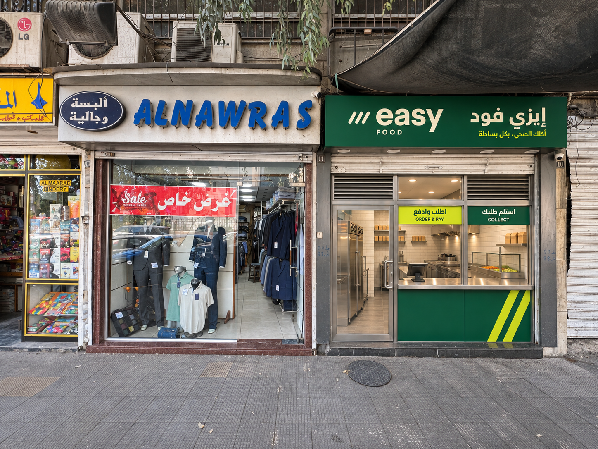
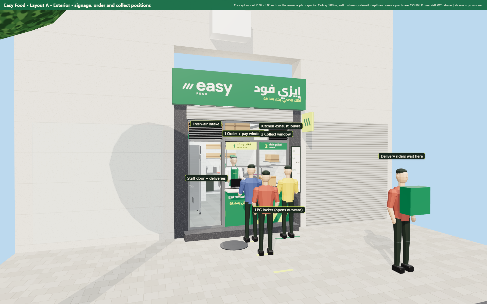

Selected A / المختار
Shopfront · الواجهة
Easy Food frontage in the actual site context: ALNAWRAS next door, existing canopy, shutter, step and pavement. Easy Food decoration and kitchen planning retained.
Download image / تحميل

Model reference / النموذج المرجعي
